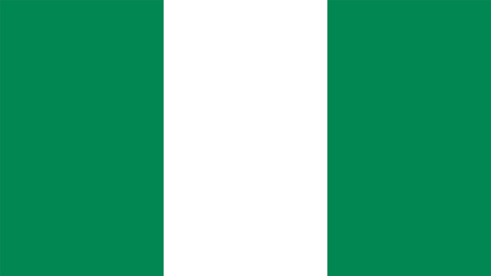

Nigeria
Squad
| Number |
Name |
Club |
Birthdate |
| Goalkeeper |
| 16 |
Daniel Akpeyi |
Chippa United |
03.08.1986 |
| 1 |
Ikechukwu Ezenwa |
Enyimba Aba |
16.10.1988 |
| 23 |
Francis Uzoho |
Deportivo La Coruña |
28.10.1998 |
| Defender |
| 20 |
Chidozie Awaziem |
FC Nantes |
01.01.1997 |
| 6 |
Leon Balogun |
1. FSV Mainz 05 |
28.06.1988 |
| 21 |
Tyronne Ebuehi |
ADO Den Haag |
16.12.1995 |
| 3 |
Elderson Echiéjilé |
Cercle Brugge |
20.01.1988 |
| 2 |
Brian Idowu |
FK Amkar Perm |
18.05.1992 |
| 22 |
Kenneth Omeruo |
Kasimpaşa SK |
17.10.1993 |
| 5 |
William Troost-Ekong |
Bursaspor |
01.09.1993 |
| Midfielder |
| 8 |
Peter Etebo |
UD Las Palmas |
09.11.1995 |
| 4 |
Wilfred Ndidi |
Leicester City |
16.12.1996 |
| 15 |
Joel Obi |
Torino FC |
22.05.1991 |
| 10 |
John Mikel Obi |
Tianjin Teda |
22.04.1987 |
| 19 |
John Ogu |
Hapoel Be'er Sheva |
20.04.1988 |
| 17 |
Ogenyi Onazi |
Trabzonspor |
25.12.1992 |
| 12 |
Abdullahi Shehu |
Bursaspor |
12.03.1993 |
| Forward |
| 9 |
Odion Ighalo |
Changchun Yatai |
16.06.1989 |
| 14 |
Kelechi Iheanacho |
Leicester City |
03.10.1996 |
| 18 |
Alex Iwobi |
Arsenal FC |
03.05.1996 |
| 11 |
Victor Moses |
Chelsea FC |
12.12.1990 |
| 7 |
Ahmed Musa |
CSKA Moskva |
14.10.1992 |
| 13 |
Simeon Nwankwo |
FC Crotone |
07.05.1992 |
| Manager |
|
Gernot Rohr |
|
28.06.1953 |
| Date |
Time |
Home |
Away |
| 16.06.18 |
21:00 |
Croatia |
Nigeria |
| 22.06.18 |
17:00 |
Nigeria |
Iceland |
| 26.06.18 |
20:00 |
Nigeria |
Argentinia |